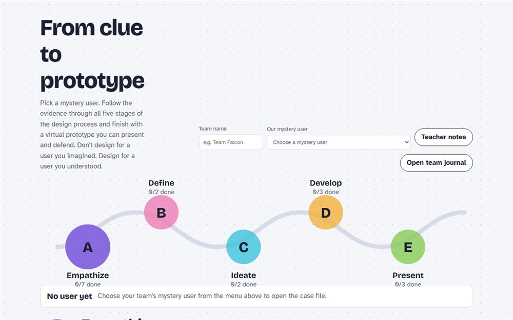

From Clue to Prototype: Design Process Studio
A team-based studio where students pick a mystery user and follow the evidence through all five stages of the design process, from persona and research to a virtual prototype they present and defend. Every activity is tagged with its syllabus statement (2.1.1–2.1.15) and command term, with teacher notes and a team journal.
Design processTopic 2.1Group work
Open the studio